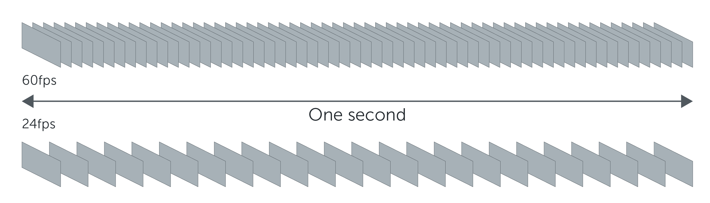

Primero, ¿qué es un vídeo?
Cuando estás viendo un vídeo, lo que ves en realidad es una secuencia de fotogramas que pasan a gran velocidad para dar la sensación de movimiento. Lo que realmente ves son imágenes fijas mostrándose de forma consecutiva, aunque pasan tan rápido que lo captas como un movimiento constante.
Entonces, surge la siguiente pregunta:
¿Cuantos fotogramas por segundo son necesarios?
El cerebro humano es capaz de procesar entre 10 y 12 imágenes separadas por segundo, y seguir siendo capaz de percibirlas de forma individual. Esto quiere decir que a partir de esos 12 fps, tú empezarás a ver una consecución de fotos como una imagen en movimiento. Por lo menos en general, ya que el umbral de la visión humana varía entre individuos, y esta percepción puede ser algo diferente para algunas personas.
Captación vs. reproducción de un vídeo
Los FPS no solo son importantes en la reproducción de cualquier vídeo, sino que también son muy importantes al momento de captarlo. La persona que desea captar el vídeo debe saber qué es lo que desea captar para decidir con cuantos FPS será suficiente captarlo.
La reproduccion de un vídeo se puede realizar a la misma cantidad de FPS en la que fue capturado. En tal caso, las cosas en el vídeo sucederán a la misma velocidad que cuanto fue captado.
Si se reproduce a una cantidad de FPS mayor a la cantidad con la que fue capturado el vídeo, este se verá en cámara rápida. El factor de velocidad de reproducción se puede calcular haciendo FPS(reproducción) / FPS(captura).
Si la reproducción se efectúa a menos FPS que cuando se capturó el vídeo, se produce una reproducción en cámara lenta. El factor de velocidad se calcula de igual manera que para cámara rápida.
Reproductor FPS
En el siguiente esquema, es posible apreciar visualmente la diferencia entre dos vídeos grabados a 60 y 24 FPS respectivamente. El esquema muestra la cantidad de fotogramas en un segundo de video.

Para que podáis apreciar la diferencia hemos elaborado un ejemplo en el que grabamos un péndulo a 24 y a 60 fotogramas/segundo.
¿Cómo lo hicimos?
Creamos un proyecto en un editor de vídeo con una línea de tiempo a 60 fotogramas/segundo. Importamos los dos archivos, los sincronizamos y exportamos el vídeo a 60 FPS.
Si bien el resultado de hacer esto puede ser variable dependiendo del editor de vídeo que se utilice, sirve para plasmar la diferencia.
A ver si puedes adivinar cual vídeo es cuál!
FPS en las películas: Géminis
El oscarizado director de Géminis, Ang Lee, ha hecho una película tan avanzada tecnológicamente que no hay cines ni en EEUU ni en España que la puedan proyectar tal y como se rodó.
Lee grabó su película con la tecnología HFR: la imagen arroja 120 fotogramas por segundo, lo que le da a la cinta una sensación muy peculiar. Lee quiere que los cines proyecten la película respetando el framerate, en un proyector 4K y en 3D.
No hay cines en España ni en los EEUU que puedan conjugar estas tres tecnologías.